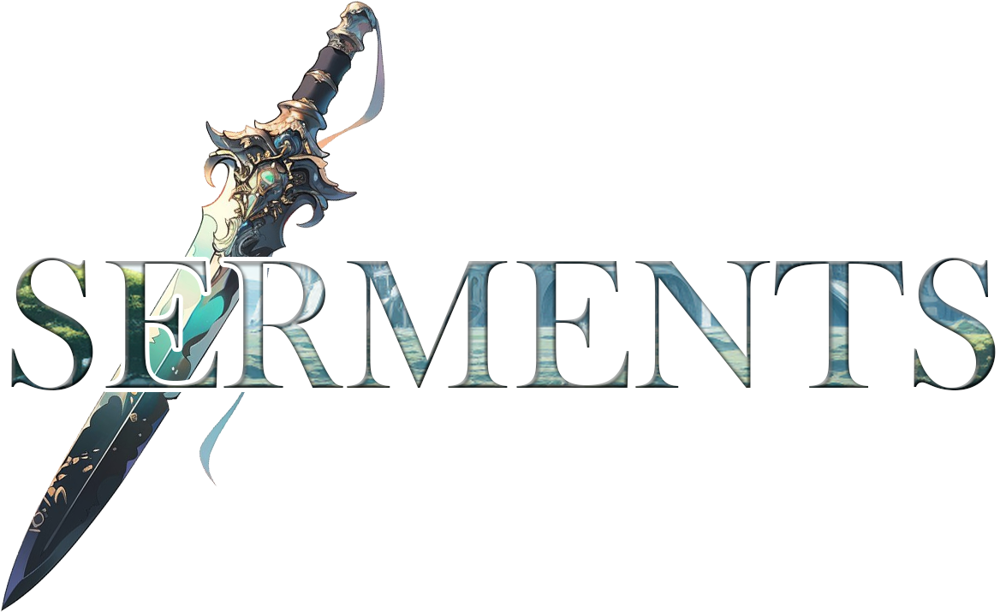

Après une mission n’ayant pas été à la hauteur de leurs attente malgré la récupération d’un artefact dans la gorge de ce qui n’était qu’une imitation de Dragon, le groupe Tramaris ramène l’objet dans leur ville d’adoption. Ce petit artefact, une simple statuette de Dragon, pourrait transformer quiconque l’ingère en une imitation de la créature légendaire, et un contact prolongé avec l’objet maléfique suffirait pour convaincre le plus puissant des marqués de tenter l’expérience. Cependant, Tramaris parvient à apporter l’objet en ville sans plus d’incidents, ce qui est une victoire en soi, malgré son goût amer. Frustré, les joueurs se font la promesse de mieux faire durant la prochaine mission.
À CLAPS, le temps se fait long. Si d’autres groupes parviennent à obtenir de petites quêtes, ici et là, Tramaris s’impatiente… Jusqu’à ce qu’une lettre leur parvienne de l’extérieur, ce qui devrait théoriquement être impossible.
La lettre est signée par Anton Robins, le médium ayant collaboré avec eux pour résoudre les soucis de Lohrberg, invitant les joueurs à le rejoindre à la citadelle de Cittàcorvi. S’offrant les services d’un ancien Marqué, Calimbra, connaissant bien les lieux, Tramaris décide de voyager jusqu’à la Citadelle pour voir de quoi il retourne. Calimbra n’officiant plus, il ne peut que les guider et leur offrir quelques maigres informations sur ce qui est devenu une prison autoritaire, loin de son image d’ancienne ville refuge pour tous les utilisateurs de la magie.
Après un départ calme vers Cittàcorvi et une pause dans une prairie avec la cité au loin, les joueurs échangent avec Calimbra et malgré des discussions agréables, celui-ci semble cacher des informations, ce qui agace profondément le groupe. Après une bourde de sa part sur le vieillissement des marqués, Calimbra décide d’effacer partiellement les souvenirs du groupe, ce qui ne fonctionne que temporairement sur Tommen. Calimbra semble avoir sous-estimé la puissance grandissante du groupe de Tramaris qui peut désormais échapper à ces artifices magiques.
Les marqués vieilliraient différemment ?
Après une bonne nuit de sommeil, Calimbra salue les joueurs et ceux-ci s’engagent, sans le vieil homme, dans la citadelle. Parvenants à franchir les épaisses portes, ils rencontrent Todd Galego, un homme important dans la ville tout habillé d’une armure bleu, qui agace rapidement le groupe par son enthousiasme et sa tendance à déjà tout connaître de Tramaris, ce qui pourrait difficilement ne pas être considéré comme une menace.
Leur offrant une place gratuite à l’auberge de la pierre blanche, celui-ci s’esquive avant que Serren ne finisse par l’étrangler, et disparaît dans une foule où tout le monde est masqué, par ordre gouvernemental.
Les joueurs se rendent rapidement chez Anton Robins. Todd Galego ayant prétendu que celui-ci travaille pour la ville, ce qui est étrange, les joueurs décident de lui poser la question directement. Cependant, le médium est absent et sa maison montre clairement des traces de lutte et de destruction de ces biens. Il semblerait que ses lieux de vies aient été fouillés par quelqu’un de mal intentionné. Cependant, un message fut laissé pour les joueurs ne marchant que sur les marqués, sur un mur au fond de ses appartements personnels.
Veille en silence,
en haut du regard,
Porte la charge,
sans jamais ployer,
à l’encre des mots
qui sont griffonnés
Invisible, bien que sous tes deux yeux,
Je soutiens l’histoire et le poids des cieux.
Respecte cette gardienne de bois,
Traverse le temps, immobile et las.
Ne sachant pas encore ce que pourraient signifier ces mots, les joueurs se dirigent vers les ruines du temple de l’Ouest. Un imposant bâtiment vert (vert ? Pas bleu ? Les coloris des différents distrincts ne semblent pas être respectés), qui ne contient plus grand-chose à part de la végétation. Cependant, reste une statue d’un Wyrm, un de ces quatre dieux vénérés dans la ville, tranché net au niveau du cou jusqu’à l’épaule opposée. La découpe est si propre qu’elle paraît presque irréelle.
Alors que Tommen prononce le nom de Sir Bel Deschamp non loin de l’objet endommagé, le nom du Paladin décédé, quelque chose d’horrible semble vouloir sortir de la statue alors que celle-ci chauffe à blanc. L’effet s’estompe au bout de quelques secondes, et les joueurs décident de ne pas reproduire l’expérience, car elle pourrait finir par tourner mal et rebroussent chemin.
Faisant un crochet au temple de l’Est, au marbre sillonné de jaune, ils se fondent dans la foule et rencontrent Marie Bogler, une Paladin sympathique, et bien qu’elle ne possède pas les informations sur les vitraux comme les joueurs auraient souhaité, elle les informe du métier de quelques-uns des autres Paladins. Si les informations sont maigres, Marie fait bonne impression sur le groupe de Tramaris. Ainsi, Marie gère le lupanar, ce qui surprend Kessia et Serren, et Leny Waaelh le Tribunal. Si les informations de Marie sont correctes, alors le Tribunal n’est pas ouvert au public et n’est pas un endroit où l’on apprécie d’être.
Les joueurs décident de s’offrir un petit repas dans l’auberge à la pierre blanche, puis d’y effectuer une nuit complète. De nombreux pas se font entendre sur le toit durant la nuit, et les joueurs s’éveillent avec la désagréable impression d’avoir été observé durant leur repos. Le gestionnaire de l’Auberge, Silas Durenne, met ces impressions sur le compte des oiseaux gargantuesques qui sillonnent parfois la ville et résident dans les volières abandonnées, à l’Est. Ils ont également rêvé d’Anton, mais malheureusement le rêve s’est déjà évaporé, trop faible pour s’attarder au sein de leurs souvenirs.
Une petite visite au musée aux Histoires leur permettra de voir à quel point la propagande dans cette ville est efficace. Plusieurs des évènements vus par les joueurs confirment leur soupçon : les souvenirs des habitants sont modifiés. Les tableaux les plus importants de la galerie ne semblent plus avoir d’auteur. Tiphanie, la gardienne de ces lieux, agacera les joueurs mais leur promettra de leur offrir plus d’informations sur l’auteur des tableaux aussitôt qu’elle parvient à trouver son identité.
Leur visite au Lupanar sera des plus surprenantes. Bien qu’ils ne parviennent pas à rencontrer Marie Bogler, ils découvriront que le lupanar de Cittàcorvi est un endroit où l’on peut vivre des souvenirs ou des fantasmes à condition d’y louer une clé, et non un lieu de prostitution. Ils ont espoir qu’Anton ait pu laisser quelque part une clé qui serait un indice capital pour leur enquête. Malheureusement, aucune preuve de l’existence d’une telle clé ne s’est encore matérialisée.
Au scriptorium, ils ne parviendront pas à trouver les indices souhaités, bien qu’ils aient dénichés trois livres sur la ville telle qu’elle existait avant les masques et l’autoritarisme, ce qui est une petite victoire en soi. Ils ont également trouvé un petit essai sur une fusion entre deux districts et un organigramme datant d’il y a trois ans, laissant apparaître des noms inconnus. Le groupe de Tramaris se met d’accord sur l’importance d’un tel organigramme, sans savoir encore quoi en faire.
Les joueurs décident de louer une clé au Lupanar afin de revivre leur rêve avec plus de clarté. Grâce au lieu magique, ils pourront enfin voir ce qu’ils ont aperçu durant leur sommeil : Anton est dans un endroit sombre et humide, ses vêtements trempés et son moral au plus bas. Il semble ne plus posséder beaucoup de pouvoirs, mais étend ce qu’il lui reste comme protection sur les joueurs grâce à des jarres trouvées plus tôt dans son logement.
Les joueurs possèdent quelques indices et de bonnes pistes, et la première partie s’achève ici.

Suite à une nuit calme passée en sécurité au Lupanar, les joueurs décident de se rendre dans les jardins suspendus. Là-bas, situé au-dessus de la ville sur un enchevêtrement de réseau de jardins suspendus dans de gigantesques coupes en métal, les joueurs découvrent une ville parallèle où personne ne s’aventure, si ce n’est d’anciens Ouvriers de la foi, libérés de leur conditionnement mental. Un des leurs révèle au groupe de Tramaris que les Ouvriers de la Foi ne sont rien d’autre que des esclaves sous l’emprise d’une manipulation magique, rendu muets par un glyphe apposé sur la langue.
Dialoguant à l’aide d’ardoises et libérés durant ce que l’Ouvrier nommera la Nuit des Crochets, ils vivent désormais loin de la ville et de ses intrigues. L’ancien Ouvrier de la Foi révélera que la mort de l’Empereur ou de celui exerçant le sort d’emprise mentale permettrait de libérer définitivement tous les Ouvriers de la Foi en ville, encore sous la coupe du gouvernement autocratique. L’entretien se termine sur un léger malaise causé par l’étrangeté de l’échange. Celui qui s’est présenté comme « Le premier » sera fatigué de la discussion et disparaîtra dans la forêt.
Les joueurs aperçoivent Marie Bogler sur le chemin du retour. Elle semble apporter des provisions pour les anciens Ouvriers de la Foi, ce qui pourrait être une preuve de son lien avec le groupe de séparatistes.
Les joueurs se rendent au Palais Bleu afin d’assister à leur rendez-vous avec l’Empereur. Celui-ci se fera passer pour un cambrioleur afin de tester le groupe de Tramaris. La discussion sera à sens unique. Selon l’Empereur, les résistants mentent et menacent la sécurité de Cittàcorvi. Il demande aux joueurs de trouver et d’éliminer les responsables à la tête du mouvement et de les lui livrer. Une fois la résistance éliminée, la ville sera de nouveau libre, la menace désormais écartée. Les joueurs ne semblent pas convaincu par les arguments de l’Empereur, il leur propose donc 300 000 pièces d’or chacun ainsi qu’un poste au sein de Cittàcorvi en tant que Bishop intérieur ainsi qu’une résidence personnelle. Si l’entretien sonne comme une menace, les joueurs ne sont pas intimidés et sortent du Palais pour poursuivre leur enquête.
Surprenant Todd Galego échangeant avec Marie Bogler devant le Lupanar, ils comprendront que les deux travaillent en équipe. Empruntant une chambre au Lupanar pour discuter tranquillement, Todd avouera faire partie intégrante de la résistance, mais ne rien pouvoir offrir aux joueurs tant qu’ils ne sont pas parvenus à s’attirer la confiance de Marie Bogler. Profitant de sa distraction, les joueurs échangent la Clé personnelle de Todd contre celle temporaire achetée pour l’entretien avec les joueurs, qu’ils empruntent pour débarquer sur le sable fin d’une plage paradisiaque sur laquelle Marie Bogler se repose. Ici, les joueurs comprendront que Marie Bogler pourrait être potentiellement la plus grande alliée qu’ils puissent trouver, parmi les gens rencontrés jusqu’à présent, et la conversation, bien que tendue, permet d’arriver à la conclusion que les deux groupes doivent travailler ensemble. Cependant, Marie Bogler reporte leur collaboration afin d’inviter les joueurs à se concentrer sur la libération d’Anton Robins. Celui-ci est emprisonné dans les geôles de la ville et la cérémonie annoncées partout dans Cittàcorvi ne peut être que l’exécution de celui-ci. Marie Bogler propose donc aux joueurs de s’emparer d’un tatouage magique vital dans les prochaines opérations, ainsi que d’attaquer le Musée des Histoires, qui contiendrait une chambre forte abritant tous les objets magiques non utilisés actuellement par le gouvernement à Cittàcorvi.
Après un petit passage au Scriptorium, les joueurs localisent le tatouage sur un certain Niko Matthias. Quelques menaces physiques, un pot-de-vin et de la persuasion plus tard, les joueurs entrent en possession du tatouage « Reflet des inscriptions » et Niko Matthias s’esquive loin de la ville grâce à son pactole récemment acquis. Les joueurs attaquent le Musée des Histoires à l’aide d’un petit groupe de soldat à Marie Bogler, assassinent les gardes présents et s’enfoncent dans la chambre forte qu’ils mettent à sac. Le seul objet utile est cependant un artefact et non un simple objet magique comme ils auraient pu le croire. L’épée Promesse est le contrepoids de l’épée Serment appartenant à l’Empereur. Capable de couper n’importe quelle cible grâce à un peu de sang et à une promesse de son porteur, l’artefact s’avère une arme redoutable dans les mains de Tramaris.
Maintenant en possession de Promesse, les joueurs se préparent à attaquer la prison durant la nuit...
À l’aide d’un ingénieux plan pour infiltrer la prison malgré la surveillance des lieux, Zaya prend l’apparence d’un garde à l’aide de son pouvoir de marqué pendant que les autres attendent au sein de la dimension de poche que la Clé de la Chambre des Brumes peut désormais ouvrir à partir de n’importe quelle serrure. Elle parvient à passer les différents paliers de la sécurité et à signer le registre tout en maintenant son apparence, ce qui est rendu difficile par la présence d’Haberland, ce marbre atténuant tout effet magique, qui compose en partie les murs de la prison.
Devançant le reste des renforts prenant d’assaut la prison, Zaya s’enfonce dans les profondeurs des lieux uniquement éclairé par la lueur des torches, avant d’être surprise par la gardienne des lieux, une colosse tout en armure et en puissance. Parvenant à tromper sa confiance dans un premier temps, la gardienne des lieux finit par comprendre la supercherie et tente d’entraver la progression des joueurs que Zaya a pu faire pénétrer au sein de la prison grâce à la Clé des Brumes.
Éliminant les gardes et se frayant un chemin à travers les escaliers escarpés de la prison, ils se retrouvent vite bloqués par le pouvoir de la gardienne, capable de matérialiser des murs de pierre et ainsi bloquer les issues de fuyards potentiels. Prenant peur pour la vie de Seihren restée de l’autre côté de ce mur surgit soudainement du sol, Kessia prend la décision de brandir Promesse, et tranche le mur en invoquant le pouvoir de l’Artefact. Sous la puissance de Promesse, la prison souterraine se retrouve séparée en deux dans un large arc de cercle, brisant une partie du chemin de garde et des escaliers, séparant leur poursuivant de Seihren qui pourra s’élancer sur l’étage inférieur en exploitant l’écroulement partiel des lieux. Le groupe au nouveau au complet et éloigné de cette menace immédiate, les joueurs s’élance dans les niveaux inférieurs et élimine ce qu’il reste de la patrouille de surveillance des cellules.
Rapidement, ils retrouvent Anton Robins, le médium, au fond d’une geôle, ainsi que Pierre Karnap, un prisonnier politique des plus importants. Grâce à leur rapidité, à la Clé des Brumes et à une chance insolente, le groupe se retrouve bientôt en sécurité dans la dimension de poche, loin de la gardienne de prison, après avoir échappé de peu à une décapitation des plus sommaires. Là, le groupe soignera Anton afin que ce dernier puisse déplacer la dimension de poche loin de la prison.
Une fois l’accès à l’extérieur ouvert, Pierre Karnap prendra la décision de ne plus retourner en ville. Il ne serait d’aucune utilité pour les joueurs à cause de son état, dit-il. Deux ans d’emprisonnement et de privation, c’est beaucoup, même pour quelqu’un d’aussi solide que Karnap.
La résistance ayant perdu une cinquantaine d’homme, elle n’est plus aussi solide qu’elle ne l’était avant ces attaques. Mais Todd Galego et Marie Bogler savent désormais qu’ils peuvent compter sur le groupe Tramaris pour la suite des opérations. Assistant à la cérémonie sacrée le lendemain à la Cathédrale, les joueurs assisteront à l’exécution par l’Empereur et ses Wyrm de la gardienne de prison, seule témoin des évènements de la nuit passé. La suspicion d’un travail en interne aura finit par avoir raison de la confiance que lui portait l’Empereur Bleu.
Les joueurs ne sont pas certains de la marche à suivre pour les prochains évènements, mais Anton Robins travaille activement sur le Lupanar pour rendre ce dernier mobile et en faire une forteresse pour la résistance. Ils apprennent également que la Cathédrale renferme deux Artefacts puissants et qu’il s’agit du lieux le plus surveillé et protégé de Cittàcorvi.
Après une bonne nuit de sommeil et à l’aide des informations fournies par leurs nouveaux alliés, les joueurs décident d’attaquer la cathédrale par le biais du seul tunnel non gardé : le bassin qui s’y trouve et qui est également relié au Lac Épineux. Après une diversion à l’extérieur préparé pour tomber soigneusement au moment où ils sortiront du bassin, les joueurs découvrent les Artefacts qui y sont entreposés. Hautement instables, ils permettent la création de l’eau étrange composant le lac et les bassins de la ville à travers laquelle évolue les Wyrms, ainsi qu’une curieuse corne de brume permettant de les contrôler mentalement.
Seihren se dévoue pour tenter d’utiliser la corne de brume et y parvient à l’aide des efforts cumulés de l’équipe de Tramaris. Elle demande aux Wyrms de défendre l’équipe et la ville, ce que les créatures interprètent comme le besoin immédiat d’éliminer leur plus grande menace : le gouvernement en charge actuellement.
Les joueurs se déplacent dans une ville en proie à l’attaque des créatures, et parviennent aux ruines du Palais Bleu. Dans une tentative d’apaiser les monstres, Seihren donne un nouvel ordre. L’Artefact échappe malheureusement à son contrôle et les Wyrms s’en emparent avant de disparaître, loin de Cittàcorvi.
Au milieu des ruines du Palais Bleu, dans la salle du trône, l’Empereur et les alliés de Tramaris se font face. Malheureusement, Anton Robins fut blessé mortellement durant l’affrontement, et alors que l’Empereur se prépare à négocier avec Tramaris, Kessia perd patience et déchaîne toute la fureur de Promesse avant qu’il ne puisse émettre le moindre son. Tranché en deux, lui et le reste de ses hommes, le bâtiment s’écroule sur ce qu’il reste du pouvoir royal de Cittàcorvi.
Marie Bogler et Todd Galego reprendront la hiérarchie de la ville en main jusqu’à ce que celle-ci puisse devenir la démocratie flamboyante qu’elle pourrait-être. Ils font promettre à Tramaris de repasser une fois leur objectif atteint.
De retour à CLAPS, Tramaris prend conscience de la montée en puissance de ses membres. La ville de CLAPS ne semble plus parvenir à effacer leurs souvenirs et des bribes de leur ancienne vie leur revient peu à peu. Les plus anciens de CLAPS leur offre plusieurs révélations. Tramaris fait en réalité partie des concepteurs de la ville et des protocoles de sécurisations des Artefacts qu’ils ramènent dans cette ville au milieu de la brume.
Solaire, l’homme le plus important dans cette équation, semble être le frère de Tommen.

Autrefois une ville florissante de quelques milliers d'Humains, La Dorsale fut le théâtre d'une tragédie inconnue provoquant la disparition de l'intégralité de ses habitants. Et si la ville est restée majoritairement en l'état, c'est avec une exception notable: retournée verticalement, elle s'enfonce désormais dans le sol comme une stalactite creusée de l'intérieur, les bâtiments alignés dans une spirale descendante. Restée abandonnée durant des décades, la ville est désormais investie par un groupe de kobolds, au grand dam des villes humaines aux alentours.
Bien qu'initialement payé par une petite ville proche de La Dorsale pour réduire les squatteurs en cendre, le groupe de Tramaris découvre en réalité un groupe de kobolds pacifiques ayant pris ce qui n'appartenait plus à personne. Et ce qui aurait pu être une perte de temps s'avère être une piste intéressante lorsqu'un Artefact se révèle être à l'origine d'un meurtre au sein de la communauté des petits lézards relativement idiots.
Les joueurs parviennent rapidement à établir l’innocence de Banane, le Kobold injustement accusé puis à retrouver le corps des Kobolds disparus. Si l’on en croit les traces de combat ayant mené au décès, le coupable est un Lindorm, un de ces Kobolds évolués pouvant changer d’apparence. Démasquant le Lindorm en l’appelant à la barre, le groupe de Tramaris met fin à la menace dans un déchaînement de violence menant à la mort – instantanée – du coupable.
Prenant possession de l’Artefact, les joueurs quittent les Kobolds dans la bonne humeur, la meute désormais l’esprit tranquille. Il leur faudra enterrer leur proche, mais le danger est désormais éloigné et concernant les petites créatures, elles ne peuvent en espérer davantage pour le moment.
Alors que les joueurs se déplacent vers Slimann pour y honorer leur contrat dans deux semaines, la rencontre avec un autre Marqué tourmenté par des assaillants invisibles les poussent à l’accompagner jusqu’à sa ville de naissance où, il l’espère, il trouvera l’aide nécessaire pour enfin se débarrasser de sa malédiction.
Fœlk Damascus, un jeune barde avec des pouvoirs de Marqués lui permettant d’agir sur les émotions grâce à sa musique, est à la recherche de la cheffe de la petite ville de Floatsamm. Ses talents de prescience pourraient, il l’espère, lui offrir une porte de sortie sur la malédiction pesant sur ses épaules.
Floatsamm est minuscule. Bâtie sur des rondins, elle s’élève et s’affaisse au-dessus du sable au gré des marées, maintenue par d’épaisses chaînes en Haberland. Des océans de coraux multicolores cernent la ville et une plage au sable fin vient relier la ville au reste du continent. Couché sur le sable lors des marées basses ou bien au-dessus des flots lors des marées hautes, la ville est constituée d’une petite dizaine de commerces et d’une cinquantaine d’habitations reliés par des systèmes de routes constitués de rondins s’enfonçant légèrement sous le poids de votre marche.
Aliya Benton, la cheffe du village et la sœur de Fœlk, possède des capacités de prescience qui lui assurent le respect de ses pairs ainsi que le maintient des distances politiques de Slimann, attendait le retour de son frère avec colère et tristesse. La sensation d’avoir été abandonnée à ses responsabilités pendant qu’il partait vivre de grandes aventures fut pour elle vécu comme une profonde injustice. Cependant, elle connaît la source du deuil que traverse son frère et ne préfère pas lui enfoncer encore davantage la tête sous l’eau.
Si Fœlk ne désire plus voyager suite à la mort de son partenaire, il pense également que la ville de Floatsamm pourra le débarrasser de la malédiction qui pèse sur ses épaules. Chaque nuit, durant son sommeil, des ombres se matérialisent pour attenter à sa vie. Le seul moyen pour lui d’échapper à ces créatures est de ne pas succomber au sommeil ou bien, au contraire, d’y sombrer plus profondément encore à l’aide de médicaments ou de plantes, ce qui semble empêcher les créatures de le localiser précisément.
Les joueurs apprennent la vérité grâce à leur usage d’un rituel permettant de se plonger dans les souvenirs d’une personne.
Fœlk Damascus et Erohir Tournevent se rencontrérent à Slimann quelques semaines après le départ de Fœlk il y a des années de cela. Ils devinrent tous deux Marqués suite à leur arrestation d’un meurtrier maniant une magie redoutable, leurs efforts combinés venant à bout de sa puissance. Erohir développa la capacité de générer des émotions, voir de manipuler les souvenirs et les esprits à l’aide de la musique, et Fœlk hérita d’une manipulation des ombres allant jusqu’à la matérialisation de celles-ci.
Après quelques années d’aventures, ils firent la rencontre d’autres Marqués et de Solaire, puis participèrent à la création de CLAPS, qui devint le quartier général des joueurs entre les scénarios. Véritable havre de paix pour les Marqués, la ville de CLAPS emploie de nombreux mercenaires comme les joueurs, chargés de neutraliser et de rapporter autant d’Artefacts que possible.
Erohir mis sa capacité de manipulation des souvenirs au service de la ville de CLAPS grâce à ce qu’il savait faire de plus compliqué : au sommet de son art, le Marqué était capable de convertir des souvenirs en puissance. Les souvenirs sont destinés à revenir à leur possesseur si celui-ci est capable d’accroître en puissance par lui-même, le vol de souvenirs officiant plus comme un prêt temporaire que comme un vol. Ainsi, tous les Marqués présents lors de la création de la ville furent bénis : les souvenirs de leur vie passée fut effacée et leur compétence de Marqué fut artificiellement augmentée. À l’aide de l’expérience accumulée lors de leurs aventures, les habitants de CLAPS étaient destinés à récupérer leurs souvenirs tout en conservant la puissance qui leur fut offerte.
Lors d’une aventure qui tourna au vinaigre, Erohir fit la rencontre du pire Marqué qu’il pouvait rencontrer : quelqu’un capable de manipuler les esprits. À l’aide de son corps et de son pouvoir, un Erohir possédé effaça les souvenirs d’une bonne partie de la population d’une ville, offrant toute la puissance dégagée par ce sacrifice à celui responsable de sa possession, dans un cercle vicieux démoniaque. Avec l’impossibilité d’arrêter le Marqué responsable de la mort de dizaines d’innocents, Fœlk n’eut aucun autre choix que d’arrêter la source principale de son pouvoir démesuré en exécutant la personne qu’il aimait le plus au monde : Erohir Tournevent.
Fœlk fut brisé par ces évènements. Le nouvel Artefact créé, un instrument à cordes ressemblant à une guitare rougeoyante, contient le pouvoir du Marqué décédé. Fœlk fit cependant le choix de ne pas sceller l’Artefact à CLAPS et de l’emporter avec lui. Si les semaines sont passées, la douleur ne s’est pas pour autant apaisée.
Fœlk fit le choix d’effacer de sa mémoire l’intégralité de son passé d’aventurier aux côtés d’Erohir, si ce n’est quelques bons souvenirs bien précis et choisis confortablement, ainsi que les souvenirs de tous les habitants de CLAPS à leur sujet, le soir de son départ – avec l’accord de ses anciens alliés, bien entendu. Le barde ne désire aujourd’hui plus qu’une vie calme loin de ses aventures et de ses années passées sur la route. Cependant, l’effacement de ces souvenirs lui offrit bien trop de puissance, bien qu’il n’en prît pas conscience.
Lors de ses voyages, seuls, il fut rapidement pris d’assauts par des monstres issus des ombres – en réalité créés par ses propres pouvoirs. Sa mémoire effacée et le traumatisme du deuil encore bien trop présent, Fœlk est désormais persuadé que le pouvoir offert par l’instrument est le sien, et que les ombres proviennent d’un autre ennemi, quelque chose de sombre, mais de familier qu’il ne parvient pas à identifier. Il s’agit simplement de ses remords et de sa culpabilité du survivant.
Grâce au rituel, les joueurs parviendront à apaiser Fœlk. Ils lui promettent tout de même de mettre fin aux agissements du Marqué responsable de la mort d’Erohir, dans un futur proche. Fœlk leur indique l’emplacement de la ville maudite sur une carte.

Les joueurs arrivent dans la ville légendaire de Slimann, abritant l’arbre le plus grand et le plus ancien du monde, l’Arbre de Cylmoril.
Afin d’en apprendre davantage sur la capitale mondiale de la magie, ils se rendent au musée, où ils rencontrent Ayden, le dirigeant de l’établissement. L’homme est plutôt sympathique et s’empresse de leur présenter la ville, son histoire politique et ses factions en place, et est surpris qu’ils n’aient été accueillis par aucune d’entre elles à leur arrivée en ville, pourtant annoncée par la presse quelques jours auparavant. Ayden explique que la ville est en fait le résultat de la fusion de deux villes, et que de nombreuses invasions furent causées par une croyance millénaire, celle que l’Arbre renferme la source d’un pouvoir démesurée. De nombreux croyants sont persuadés que Cylmoril, la déesse de la chance, est enfermée au cœur de l’Arbre.
Après cette interaction positive, les joueurs se dirigent vers l’administration, avec la ferme intention de faire parler les dirigeants sur les raisons de leur présence à Slimann. Une femme du nom de Kayden se présente comme une des membres du Conseil actuellement à la tête de la ville et discute avec eux de la disparition de la magie en ville, ainsi que des éboulements récents dans les mines, sous les racines de l’Arbre. Durant cette conversation formelle et peu détendue, Kayden explique l’arrivée de son groupe il y a une vingtaine d’année, bien qu’elle ne soit pas généreuse sur les explications. Elle avoue avoir été la seule à rester en ville pour assurer la gestion, ces six dernières années, grâce à un tatouage lui permettant de se dédoubler dans une pièce précise. Elle révèle également aux joueurs que le statu quo entre la garnison et la guilde des pas perdus arrange le gouvernement, malgré le conflit actuel. La garnison, l’organe officiel de maintien de l’ordre, est ainsi perturbé par les agissements de la Guilde des Pas Perdus, qui s’assure de protéger les citoyens délaissés par l’organe officiel. Elle explique également que l’Arbre de Cylmoril est un danger, et que le seul moyen d’empêcher ses racines de s’enfoncer toujours plus profondément dans la terre jusqu’en devenir un danger pour tous, c’est de récolter et de creuser ses racines. L’autre information essentielle, c’est que le groupe de Kayden aurait été fondé par Solaire, le frère de Tommen, à une époque où celui-ci n’aurait pas été un marqué, mais que celui-ci aurait disparu il y a vingt ans.
Pour en savoir plus, les joueurs se déplacent dans les bureaux de la presse, à Fanghaven. Le directeur est pressé et ne répond que partiellement à leur question, et souvent à contre cœur. Pour lui parler, le meilleur moment semble être après le tirage, à 18h.
Prenant désormais la direction de la guilde des Pas Perdus, Serren découvre avec stupeur l’existence de sa fille (adoptive), présente sur les lieux pour le besoin de son travail : gardienne de l’Arbre sacré de Cylmoril. Sa fille, Noelle, est stupéfaite de la réapparition de sa mère, disparue vingt ans plus tôt sans explication. Sans nouvelles depuis vingt ans, Noelle oscille entre la colère et l'indignation, mais ne parvenant pas à dire ce qu’elle possède sur le coeur ni à faire le tri dans ses émotions, la jeune femme préfère quitter les lieux avant que ses paroles ne dépassent ses pensées.
Les joueurs, se remettant de leurs émotions, parlent un peu à Alaysia, une des gérantes de la Guilde des Pas Perdus. Cette dernière promet son aide dans l’enquête des joueurs, voyant que ses intérêts coïncidents avec ceux des joueurs.
Se rendant à la taverne pour parler à des mineurs de ces tremblements de terre récents, les joueurs rencontrent quelques travailleurs et jouent au Kagi durant une petite heure. Perdant un peu d’argent mais gagnant quelques informations, les joueurs savent désormais que la sève produite par les racines de l’Arbre est le principal composant de l’encre utilisée pour les Tatouages, ainsi que pour la conception de nombreux objets magiques. Elle serait récoltée, puis acheminée vers l’école de magie, la Guilde des Échos, pour ensuite y être travaillée. Les mines sont un réseau sous-terrain labyrinthique dont il n’est pas possible de sortir vivant sans une carte ou un guide.
Durant leur sommeil, les joueurs sont contactés par quelque chose sommeillant dans l’Arbre. Difficile à dire si la chose est bien intentionnée mais le rêve est intense. L’Arbre, ou bien la chose qu’il contient, serait plus vieux que le monde lui-même. L’Arbre montre également un petit refuge creusé dans le bois, dans lequel une trace de main serait peinte.
Après un petit passage à la Guilde des Échos, l’école de magie, les joueurs achètent de nombreux équipements et Tatouages, et en profitent pour parler avec la direction. Ils apprennent que les membres de la direction de l’école voient l’Arbre comme une entité profondément maléfique, faisant écho à l’avis tranché de Kayden.
Après un deuxième contact, physique cette fois ci, par Kessia, d’autres informations sont obtenues. L’Arbre possède un rapport direct avec la magie, et les joueurs reçoivent l’impression que leurs pouvoirs sont une pale copie de ce qu’est capable la créature. Kessia reçoit également l’image d’un regroupement de Marqués en leur compagnie ainsi que celle de Solaire, au pied de l’Arbre, quelque temps avant la fondation de la ville de Claps. Les joueurs et Solaire auraient disparus en même temps pour fonder la ville ?
Les joueurs retrouvent leur courage et décident de parler à Noelle. La jeune femme, bien que toujours perturbée par la réapparition de sa mère, parvient à faire abstraction et à leur donner un maximum d’informations utiles.
Zaya apprend qu’elle était autrefois architecture dans une autre ville, loin d’ici, une des trente architectes ayant participé à la fondation de ce havre de science. Noelle avoue ne pas avoir une bonne relation avec les dirigeants de cette ville à cause de son statut et de son travail, si ce n’est avec la Prêtresse de la déesse de la chance. Elle montre également l’ascenseur au cœur de l’Arbre, dont personne n’a jamais réussi à ouvrir la porte. Si l’on en croit les joueurs, le « Noyau » de l’Arbre se trouverait juste au-dessus de l’ascenseur.
Les joueurs décident de parler à la prêtresse, dans une tentative de glaner encore davantage d’informations. La discussion est terrifiante, la prêtresse haïssant les joueurs, voyant en eux les responsables de la disparition de Solaire ayant mené à la dissolution de leur groupe. La conversation ne se passe pas très bien, mais elle laisse tout de même échapper quelques bribes d’informations dont les joueurs s’emparent avant de quitter les lieux : Solaire avait la capacité de converser avec l’Arbre et c’est ce dernier qui lui aurait offert ses deux gants ?…
Quelque chose ne va pas dans tous ces récits et les joueurs commencent à s’en rendre compte…
Ils retournent parler au conseil et n’obtiennent que peu de réponse et beaucoup d’hostilité. Cependant quelques réactions se font voir à la mention d’une montre à gousset que les joueurs soupçonnent d’être l’artefact à l’origine des maux frappant l’Arbre de Cylmoril et la ville de Slimann. Caleb ne parvient qu’à peine à prétendre ne pas connaître l’objet magique et les joueurs s’en aperçoivent.
Tommen et Zaya se rendent en prison afin de libérer Noëlle, visiblement arrêtée par le conseil pour son opposition à certains projets concernant l’Arbre. Cependant, Tommen et Zaya parviennent à sortir de la prison grâce à leur lien avec la créature contenue au sein de Cylmoril et percoivent le souvenir d’une cachette au sein de l’Arbre utilisée par Solaire lorsque celui-ci était encore un enfant. Descendant dans les mines, les joueurs enfin réunis parviennent à ouvrir les portes de l’ascenseur grâce à leur lien avec l’occupant de l’Arbre et décident de ne pas monter jusqu’à lui, mais plutôt de descendre encore plus profondément dans les mines pour retrouver Caleb et la montre s’y trouvant.
Assassinant silencieusement les patrouilles jusqu’à parvenir à un Caleb surpris, ils parviennent à vaincre ses forces armées et à le faire chuter dans un précipice, puis à récupérer la montre. Les joueurs choisiront de mettre le feu à l’Arbre de Cylmoril afin de libérer la créature emprisonnée en son sein, puis accuseront Caleb d’être à l’origine de l’incendie. La créature magnifique s’échappera de l’Arbre avant de disparaître… La ville, elle, nécessitera une évacuation d’urgence à laquelle les joueurs prêteront main forte, puis plus tard, à la reconstruction.
Durant l’aventure, quelques questions en suspens demeurent. Il semblerait qu’en réalité, Solaire, encore un enfant à l’époque, en savait davantage sur les Dragons que la créature au sein de l’Arbre elle-même et lui ait expliqué, puis ordonné gentiment la création des gants. Comment un enfant aurait-il pu avoir ce genre d’informations ?
La montre à Gousset, comme les autres Artefacts avant elle, est scellée au sein de la ville de Claps.